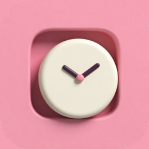

YourMate隐私政策
YourMate 不联网,不收集、不保存、不上传你的任何个人信息。
摄像头与面部数据
- 应用使用 iPhone 的前置摄像头(原深感摄像头)和系统的面部追踪能力,只为一件事:知道你的眼睛相对屏幕在哪里,好让画面的透视跟着你的视线变化。
- 面部数据只在你的手机上实时计算,用完即丢。我们不保存面部数据,不把它传出手机,不用来识别你是谁,不用于广告或任何其他目的,也不与任何第三方共享。
- 你可以在 设置 › 隐私与安全性 › 相机 里随时关闭摄像头权限。关闭后应用仍可使用,画面改为固定视角。
运动传感器
应用读取手机的倾斜角度,用来让画面里的地板和你的桌面对齐。数据只在本机使用,不保存、不上传。
我们不做的事
- 不要求注册或登录。
- 不联网:应用没有任何网络请求。
- 不含广告,不含第三方统计或追踪工具。
保存在手机上的内容
你的布置(时钟样式和位置、角色站位等)保存在应用自己的本机存储里。删除应用即全部清除。
儿童
应用不面向特定年龄,也不收集任何人的信息,包括儿童。
变更与联系
政策有变更时会更新本页并修改生效日期。联系方式:github.com/caspianchan31/yourmate/issues
Privacy Policy
YourMate works fully offline. It does not collect, store, or transmit any personal information.
Camera and face data
The app uses the front TrueDepth camera and the system's face tracking for one purpose only: to know where your eyes are relative to the screen, so the on-screen perspective can follow your viewpoint. Face data is processed on your device in real time and discarded immediately. We do not store face data, do not send it off the device, do not use it to identify you, do not use it for advertising or any other purpose, and do not share it with any third party. You can turn off camera access at any time in Settings › Privacy & Security › Camera; the app keeps working with a fixed viewpoint.
Motion sensors
The app reads the tilt of your phone to align the virtual floor with your desk. This stays on your device.
What we don't do
No account, no network requests, no ads, no third-party analytics or tracking.
Data on your device
Your layout settings are stored locally in the app and are removed when you delete the app.